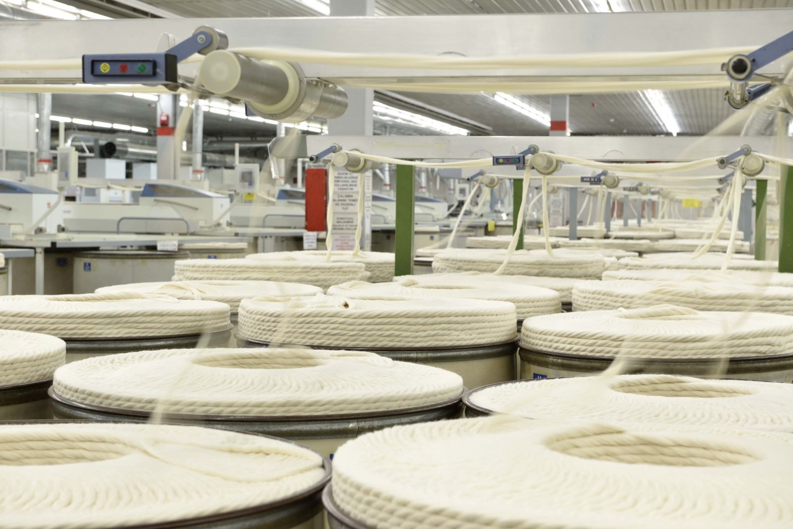
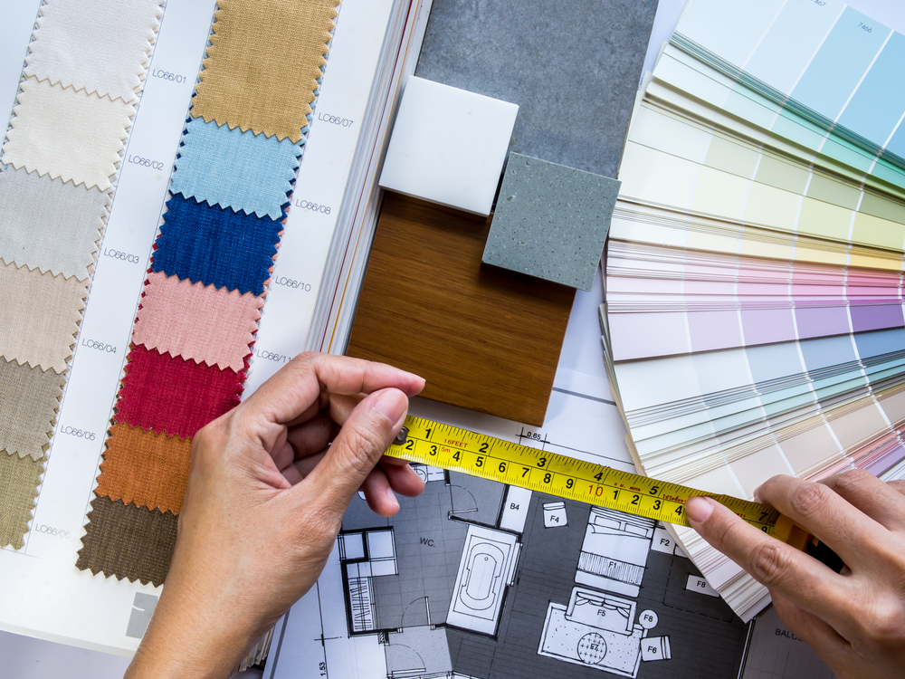
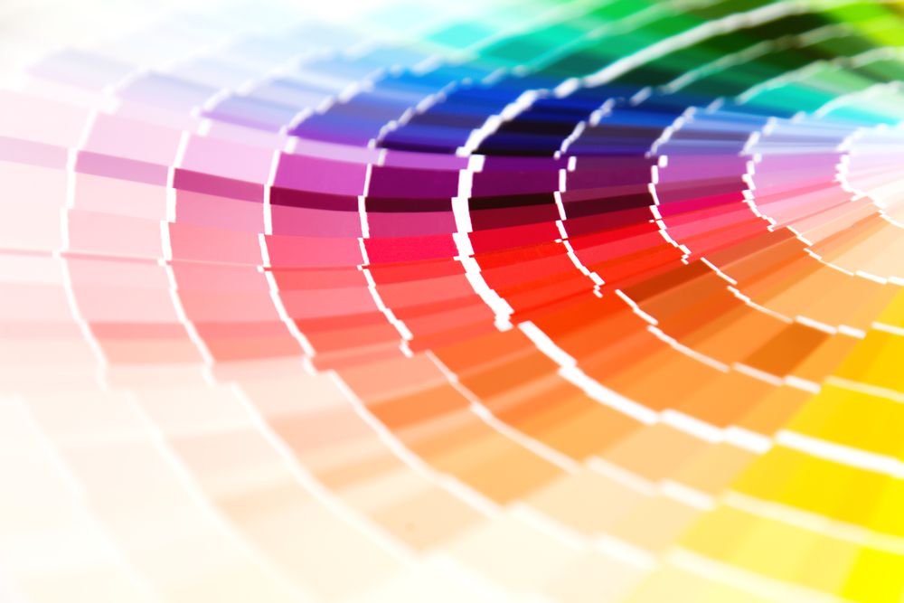
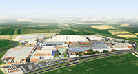

Home
|  |
Türkei erstes voll integrierte Resort- Baumwollgewebe Titel mit der Türkei wurde
- als erste voll integrierte Resort etabliert.
- 1958: Baumwollgewebe Titel mit der Türkei wurde als erste voll integrierte Resort etabliert.
- 1983: Girgin Textile gehört zu den Konzernunternehmen der AKÇA Holding.
|
|
Exportriese- Visionäres Management,
- Kontinuierliche Investition,
- Starke Teamarbeit von der Produktion bis zum Vertrieb
|
|  |
- Weltmarktführer für Heimtextilien
- Produktionskapazität in verschiedenen Qualitäten und Standards entsprechend den Anforderungen der Weltmärkte.
- Führer in Leinen Exporte in den USA aus der Türkei,
Zugelassener Lieferant von Riesen in europäischen Heimtextilien.
|
|  |
Branchenführerschaftsmission- Single-Pass-Digitaldrucktechnologie
Girgin textile, das die Single-Pass-Digitaldrucktechnologie,
- die die Zukunft der Digitaldrucktechnologie darstellt,
in die Heimtextilbranche einführte,
- ist mit seinem innovativen Ansatz und seiner Herstelleridentität führend in der Branche.
|
|  |
Riesige Produktionsbasis- Girgin Textile ist eine gigantische Einrichtung
- Auf Weltniveau mit 4.250 Mitarbeitern und
- Einer Fabrik auf einer Gesamtfläche von 500.000 m2.
|
|
Export- und Beschäftigungsstar Girgin Tekstil- Hohe Beschäftigung,
- Hohe Standard-Betriebsbedingungen,
- Mitarbeiterzufriedenheit,
- Produktionsqualität.
|
Home Basa Dön